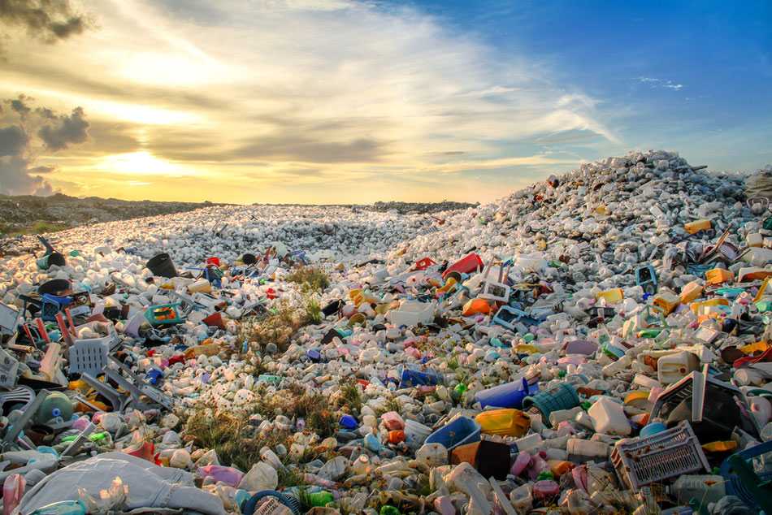
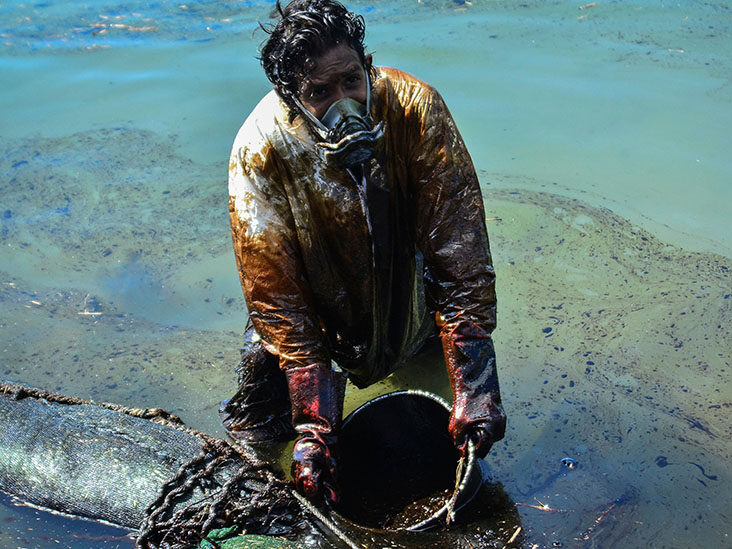
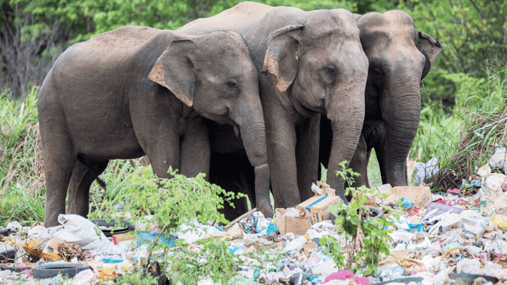

Plastic waste around the world
THE PLASTIC PROBLEM
We're surrounded by plastic. It’s in the single-use packaging we discard,
the consumer goods that fill our stores, and in our clothing, which sheds
microplastic fibers in the wash.
In the first decade of this century, we made more plastic than all the
plastic in history up to the year 2000. And every year, billions of
pounds of more plastic end up in the world's oceans. Studies estimate
there are now 15–51 trillion pieces of plastic in the world's oceans
— from the equator to the poles, from Arctic ice sheets to the sea
floor. Not one square mile of surface ocean anywhere on earth is free of plastic pollution.
The problem is growing into a crisis. The fossil fuel industry plans to
increase plastic production by 40 percent over the next decade. These oil
giants are rapidly building petrochemical plants across the United States
to turn fracked gas into plastic. This means more toxic air pollution and
plastic in our oceans.
We need urgent action to address the global plastic pollution epidemic.
Effect of plastic pollution

Plastic pollution is the accumulation of plastic objects
and particles in the Earth's environment that adversely affects wildlife,
wildlife habitat, and humans. Plastics that act as pollutants are categorized
into micro-, meso-, or macro debris, based on size.Plastic is a synthetic organic
polymer made from petroleum with properties ideally suited for a wide variety of
applications, including packaging, building and construction, household and sports
equipment, vehicles, electronics and agriculture. Plastic is cheap, lightweight,
strong and malleable. Over 300 million tons of plastic are produced every year,
half of which is used to design single-use items such as shopping bags, cups and straws.
At least 8 million tons of plastic end up in our oceans every year. Floating plastic
debris are currently the most abundant items of marine litter. Waste plastic makes
up 80% of all marine debris from surface waters to deep-sea sediments. Plastic has
been detected on shorelines of all the continents, with more plastic materials
found near popular tourist destinations and densely populated areas.
Effect of plastic pollution on humans

Microplastics entering the human body via direct exposures
through ingestion or inhalation can lead to an array of health impacts,
including inflammation, genotoxicity, oxidative stress, apoptosis, and
necrosis, which are linked to an array of negative health outcomes including cancer,
cardiovascular diseases, inflammatory bowel disease, diabetes,
rheumatoid arthritis, chronic inflammation, auto-immune conditions, neuro-degenerative diseases, and stroke.
Scientists have found microplastics in 114 marine species, and almost one-third of these end up on our plates.
Some of the chemicals added to plastic to increase its performance are considered endocrine disruptors – chemicals
that affect normal hormone function – while some retardants may interfere with brain development in children.
Studying the impacts of microplastics on human health is very challenging. Today we know very little about what
levels of contamination might negatively affect us. The United Nations Food and Agriculture Organization stated
following recent research – that people are likely to consume only negligible amounts of microplastics from fish.
Nonetheless, scientists remain concerned about the human health impacts of marine plastics. More research needs to
be carried out before we are truly able to understand the implications of consuming contaminated fish.
But it’s quite clear that this cannot possibly be a good addition to our diets. With every passing day,
as we consume more contaminated seafood, plastic pollution affects human health, even if these effects
have not manifested just yet.
Effect of plastic pollution on animals

Hungry animals usually smell food in plastic containers and bags. However, their curiosity and
desire for food often cause them to get their heads, feet or wings trapped in the plastic.
While animals stuck in plastic becomes viral on the internet
doesn't change the fact that animals may suffer from overheating, suffocation, dehydration, starvation, and eventually
death. In the case where the limbs of animals are trapped,
it makes them less agile and more vulnerable to predators, competitors, and environmental stress.